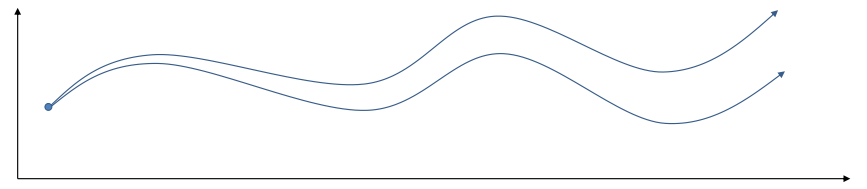
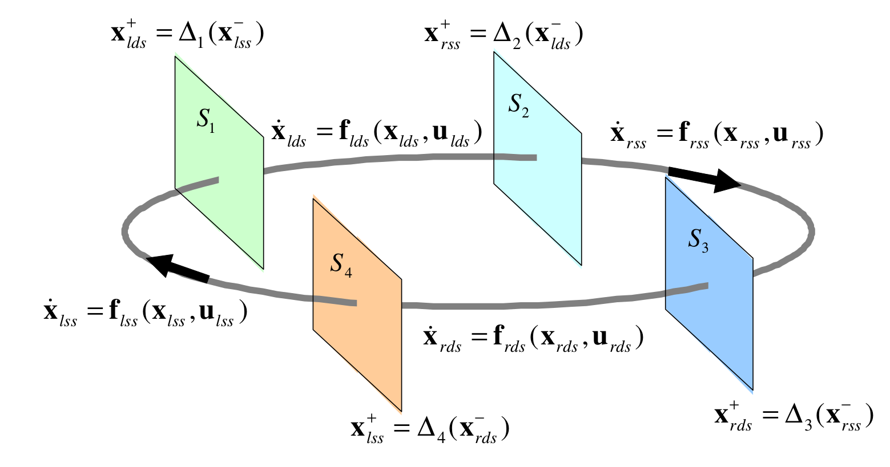
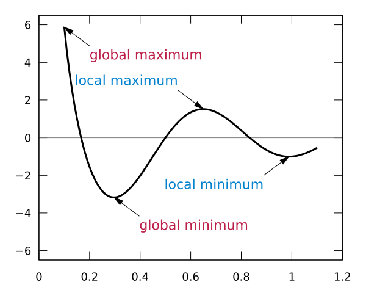
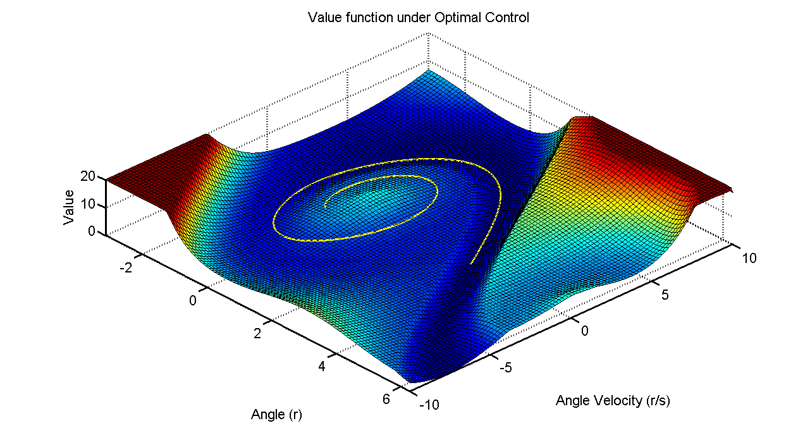
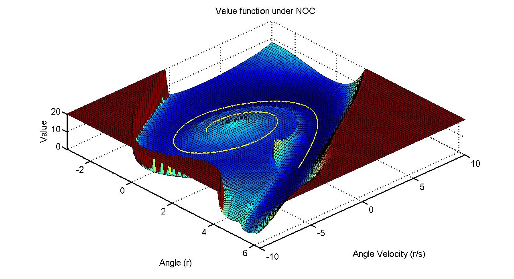
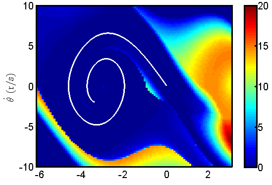

Trajectory Optimization - Warm-start Trajectory Generation
Warm-start trajectory generation
Why do we need to generate a warm-start trajectory?
Robustness issue with direct shooting methods
Shooting method
Optimize over actions only \[ \min_{u_1, u_2, \ldots, u_{T}} \sum c(x_1, u_1) + c(f(x_1, u_1), u_2) + c(f(f(x_1,u_1), u_2), u_3) + \ldots \]

Highly constrained planning problems

Discontinuity in the cost function or the dynamics
- Discontinuity in the cost function
- dynamic obstacles, jay walkers
Discontinuity in dynamics

Figure 3: Hybrid dynamics model for 3D walking
For better performance
- For better local minimum

- For better convergence
How to generate a warm-start trajectory
Solve a simple problem first
- Use a simple model to generate high-level trajectory first 1 (e.g. use a lumped-mass model to optimize the CoM trajectory)
- Replace a difficult objective with a simple one, e.g. remove dynamic obstacles
- Relax constraints or remove difficult constraints
- Relax contact [Contact-Invariant Optimization]
- Neglect vehicle non-holonomic constraints \[ \dot{x} = \cos(\theta) v \] \[ \dot{y} = \sin(\theta) v \]
Use a robust planner to generate a rough solution
- Sampling-based method, such as RRT
- Inverse Kinematics
- Generate a trajectory in the operational space
- Solve IK to generate a trajectory in the robot joint space
- Human demonstration, e.g. using human drive input to generate warm-start trajectories
Use a nominal controller
- LQR controller, e.g. one-link pendulum swing-up task
- LQR gain scheduling controller, e.g. stopping plan
- Straight steering angle policy
Neighboring optimal control (NOC)
\[ u = u^*(k) - K \delta x(k) \]
Neighboring optimal control (NOC)
For one-link pendulum swing-up problem,

Neighboring optimal control (NOC)

Neighboring optimal control (NOC)

Collocation method
Optimize over actions and states with constraints \[ \min_{u_1, u_2, \ldots, u_T, x_1, x_2, \ldots, x_T} \sum_{t=1}^{T} c(x_t, u_t, t) \] s.t. \[ x_t = f(x_{t-1}, u_{t-1}) \]
Collocation method in general is less sensitive to the warm-start trajectory. 6
Footnotes:
Whole-body Motion Planning with Centroidal Dynamics and Full Kinematics
Humanoid full-body manipulation planning with multiple initial guesses and key postures, Bowei Tang, Tiuanyu Chen, Chris Atkeson
Full-body motion planning and control for the egress task of the DARPA robotics challenge, Chenggang Liu, Chris. Atkeson
Trajectory-based dynamic programming
Standing balance control using a trajectory library
Biped walking control using a trajectory library